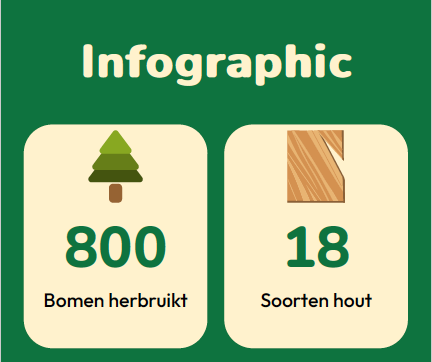
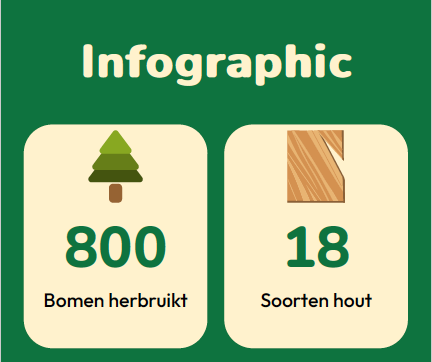

Portfolio
Ik ben verheugd om enkele van mijn recente projecten met je te delen. Mijn naam is Twan Snepvangers, en ik ben een gepassioneerde CMD'er. Als student CMD, heb ik meegewerkt aan diverse boeiende projecten die mijn vaardigheden en creativiteit hebben uitgedaagd. In dit portfolio vind je een greep uit mijn werk, variërend van webdesign en grafische vormgeving tot projecten op het gebied van contentcreatie.
Boom Tot Bouw
Boom Tot Bouw is een website om een groen initiatief in Amsterdam onder de aandacht te brengen. Het duurzame initiatief waar deze website om draait is Stadshout. Kortom Stadshout recycleert gekapte bomen in Amsterdam. Het hout gaat deels naar bedrijven en deels wordt het gebruikt voor bestellingen van bijvoorbeeld de gemeente. Deze website probeert het bewustzijn voor dit initiatief te vergroten, omdat het je uitdaagt om anders naar afval te kijken. Vind duurzame oplossingen voor afval. Boom Tot Bouw probeert dit initiatief onder de aandacht te brengen en mensen te inspireren om out of the box te denken met herbruikbaarheid in gedachten.
 

ADE-Guide
Als eerste individuele project in mijn propedeuse jaar van CMD heb ik een html CSS website gemaakt. Deze website draait om het grootste dance event van Nederland, namelijk ADE. Deze website heeft als doel: een overzicht bieden voor de enorme hoeveelheid feesten die tijdens ADE worden georganiseerd.

Water-Reminder
Tijdens het vak Emering Technologies ben ik aan de slag gegaan met ubiquitous computing. Hierbij heb ik gebruik gemaakt van een Arduino om vervolgens een idee uit te werken. Bij dit concept heb ik een Water-Reminder gemaakt. Deze geeft om de 20 minuten aan dat je weer een slok water moet nemen. Op deze manier vergeet de gebruiker niet water te drinken. Daarnaast heb ik dit project uitgebreid door gebruik te maken van een 3D printer. Hierbij heb ik mijn skills uitgebreid op het gebied van 3D ontwerpen.